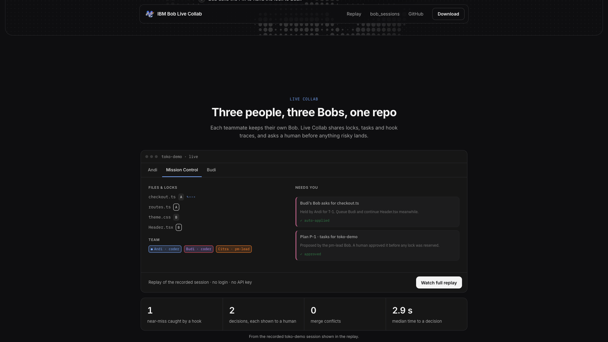
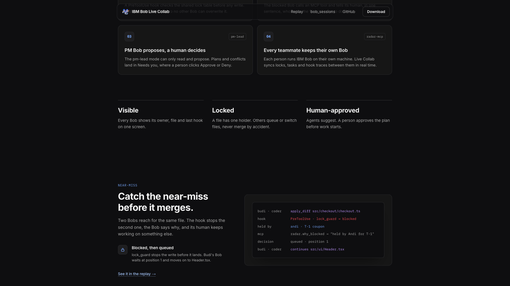
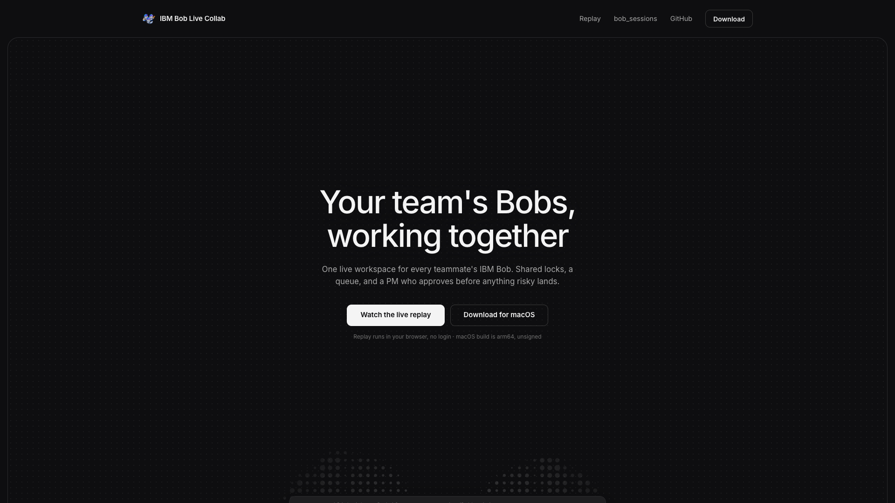

Fast kinetic open built from the site's own words and screens, then the camera slows down and walks one near-miss through three Bob IDE windows. These are static sketches of each beat's key moment, so you can judge layout, hierarchy and copy. Motion comes in the build.
1920×1080 · ~2:50 · 11 beats · VO + music
Act I — Fast open0:00–0:34 · kinetic, one idea per beat
Everyone brings their own Bob
Two Bobs. One file.
AariefAliefUmar
src/checkout.ts
1export functioncalculateTotal(cart) {
2const sum = cart.items.reduce(add, 0)
3return sum
4}
CONFLICT (content): Merge conflict in src/checkout.ts
0:00
01 · COLLISIONkinetic-type-beats · 0:00–0:09
The words swap in place on each beat: "Your team codes with AI" → "Everyone brings their own Bob" (the chips pop in) → "Two Bobs. One file." The code card slides in from the right, two carets type on line 3, and the CONFLICT bar slams in with a frame shake.
→ cut on impact
CONFLICT (content): Merge conf…
Your team's Bobs, working together.
One live workspace for every teammate's IBM Bob. Shared locks, a queue, and a PM who approves before anything risky lands.
0:09
02 · TAKEOVERticker-takeover · 0:09–0:18
The headline crashes in from the left and shoves the CONFLICT bar off the right edge, with a spring overshoot. The mascot springs up, then the sub-line rises. The copy is the site hero, word for word.
→ whip left



Visible. Locked.Human-approved.
0:18
03 · SIZZLEcamera-journey (B) · 0:18–0:30
The camera flies in 3D, with no cursor, across real screenshots of the site (hero, Mission Control, near-miss, primitives), with motion blur on each leg. One slam word lands per leg, and the other two stay at 28% so the triad reads. The last leg pushes into black.
→ push to black
Let's slow it down.
ONE BRIEF · TWO CODERS · ONE NEAR-MISS
0:30
04 · SLOW DOWNtitlecard-reveal · 0:30–0:34
A breather. The line slides up and crossfades in, then everything holds still. This is where the film shifts from sizzle to demo.
→ zoom into window
Act II — Slow demo in Bob IDE0:34–2:28 · one continuous world, the camera does the cutting
toko-demo — Bob IDEAarief · PM
toko-demo · Sprint brief
• Promo code at checkout • Header shows live cart total • Total includes the discount
Bob◐ Live Collab PM Lead ▾
Ask
Plan
Code
◐ Live Collab PM Lead
▤ brief.pdf Read brief.pdf and split it into tasks for Alief and Umar. One owner per file.
custom mode · pm-lead · read + mcp only
0:34
05 · THE BRIEFprompt-type-submit-generate · 0:34–0:58
We open tight on Aarief's Bob IDE, and the camera punches in on each VO cue. The dropdown opens on "custom mode", the pm-lead chip rises on "can't touch the code", and the prompt types on "asks Bob". Submit is a small press-spring.
continuous
⧉ mcp · radar.team_status 2 coders online · Alief, Umar
Bob works: each MCP call's spinner turns into a check. The plan card cascades in row by row. The cursor glides to Approve, press-spring, and "✓ Approved by Aarief" replaces the buttons.
One unbroken, decelerating pull-back from Aarief's chat to the three-window workspace. Once it settles, the T1 and T2 cards fly on arcs into each coder's window. No zoom-in in this beat.
The camera stops at Alief first, then pans down to Umar. The brief and MCP traces stack on the right, code types line by line under the owner pill, and a lock chip pops on each owned file. Umar's window waits in the corner for the next leg.
continuous
toko-demo — Bob IDEUmar · coder
✎ apply_diff · src/checkout.ts
⚓ hook · PreToolUse · lock_guard → blocked checkout.ts is locked by Alief (T1)
§ rules · don't retry · no shell
⧉ radar.why_blocked → held by Alief
Blocked before it lands.
1:52
09 · NEAR-MISScamera-journey (A) · 1:52–2:28 · HELD
The camera punches into Umar's chat as the red block lands, with a flash and a small shake, then holds still for ~1.5 s while the line lands. The rules and why_blocked cards stack in. The camera swoops to Aarief's "Needs you" toast, and a click on "Queue after T1" resolves it. This is the callback to 01: same file, opposite outcome.
→ whip up
Act III — Close2:28–2:50
Built on Bob's own features.
◐ Custom modes
Roles
pm-lead · plans coder · builds
⚓ Hooks
Enforcement
SessionStart PreToolUse PostToolUse · Stop
⧉ MCP
A voice
propose_plan why_blocked request_file
§ Rules
Manners
✗ retry ✗ shell tricks ✓ explain, move on
all in one .bob/ kit per workspace · built with Bob
2:28
10 · BUILT ON BOBgrid-card-assemble · 2:28–2:41
The four cards cascade in on an offset baseline (not a flat grid), one per VO clause. On "we built it all with Bob" they collapse into a single .bob/ chip.
→ collapse to center
IBM Bob Live Collab
Every Bob, on the same page.
Watch the live replayibm-bob-live-collab.pages.dev
AariefAliefUmarImelda
Community hackathon project · not an official IBM product
2:41
11 · CTAlogo-assemble-lockup · 2:41–2:50
The mascot springs out of the .bob/ chip, the wordmark letters cascade in, the URL types, and the team chips pop. The frame holds to the last second, with no fade to black.
end · hold
Seam map · pace
01cut
02whip
03push
04zm
05—
06—
07—
08—
09whip
10coll
11hold
■ fast open, one beat every 1.5–2.5 s ■ slow demo, camera moves on VO cues ■ close
SEAMS34 s fast · 114 s demo · 22 s close
One world from 05 to 09: no cuts, only camera legs. Act I seams travel leftward.
Palette · from the site
bgsurfaceaccentdangerAariefAliefUmarhook
Type
Plex Sans 600
Source Serif italic
Plex Mono · traces
From the reference: a huge headline with one serif-italic word and a colored full stop, soft blurred color fields, lots of air, and hard word cuts on the beat. Bans: gradient text · invented stats · IBM logo · slideshow cuts · screensaver motion · Andi/Budi names.
TOKENScapture/extracted/tokens.json
The Bob IDE in 05–09 is a reconstruction. Each window can be swapped for a real screen recording later without changing the timing.